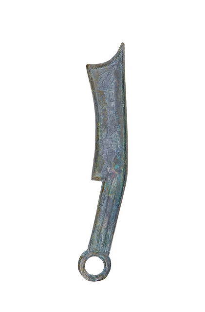
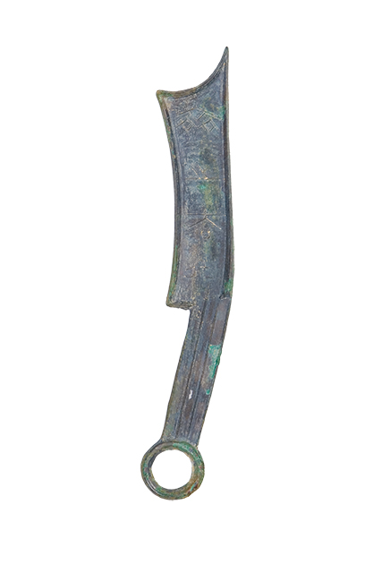

中学的政治课本上告诉我们：货币的演变是商品交换发展的产物。随着商品中使用价值与价值矛盾的发展，必然使一种商品从一般的商品中分离出来转化为一般等价物，进而产生货币。随着交换的进一步发展，货币作用的等价物集中到了贵金属的物品上，而金属铸币也随之产生。
春秋战国时期位于我国东部沿海地带的齐国，是著名的军事家传奇人物姜子牙的封地，因为它濒临大海，得渔盐之利，又加上有明君——齐桓公、齐威王，贤臣——管仲、晏婴，名侯——孟尝君等的治理，出现了国力强盛，军事发达，经济繁荣的景象。伴随着经济往来的不断发展，齐国按照当地的风俗习惯铸行了一种形状像青铜刀的手工业和日常生活使用的工具——当时人称为“刀削”的青铜铸币，称之为“刀币”。据考证，作为春秋五霸之首的齐桓公已开始在国都或其他重要的城市由官方铸造货币。
素以工商业的发达而见长的齐国，交易在当时成为民间日常生活中的大事，诚如《管子·乘马》所说，“无市则民乏矣”。繁荣的商业贸易促成了发达的货币文化。齐国是最早铸行刀币的国家，《管子·轻重戊》：“令左司马伯公将白徒而铸于庄山。”事在齐桓公期间。出土的较早的齐刀币实物也为春秋中期。可以肯定，至迟在春秋中期，齐国已大量铸行刀币了。刀币一出，至战国末、秦统一货币以前，一直是齐国最主要的流通货币。整个春秋战国，齐以刀币为主币，成为东方刀币流 通区的代表。梳理一下齐国的货币文化，有助于理解齐国工商业的发达以及临淄这个文献屡见称述的“海岱间一都会”在当时作为著名商业集散中心的作用，更有助于弄清齐对中国货币制度、铸造技术等方面的贡献和历史地位，更可以以此来窥见在春秋战国那段峥嵘岁月里齐国人的生活风貌。
一、刀币种类
“刀币”正式称谓是“刀化（货）刀币”，由刀首、刀身、刀柄和刀环四个部分组成。刀之缘以外廓，刃不向外，向左而不向右，所说凹背凸刃，刀首近于三角形，刀身和刀柄是大小相近的两个长方形，刀环呈圆形，这几种几何形体巧妙地组合在一起形成了一种平稳周正、丰满、圆润的形象美和和谐美。据实际测量，刀环的直径与刀首的长度是1：7.5，恰好是人的头部与身高的比例。而整个“刀币”的长度（一般为18厘米左右）又几乎是人手的长度，如果将6枚刀币首尾相接，可组成一个圆环，这就是《周礼·考工记》中所说的“筑氏为削，长尺博寸，合六面成规”。这些精确的设计和巧妙的构想，是古代劳动人民聪明才智的充分体现。以后随着齐国疆土的扩大和与邻国交战，齐国的刀币流通范围逐渐扩大到燕、赵地区。
齐刀比较厚重，以厚大精美而著称，基本形制是尖首、弧背、凹刃，刀的末端有圆环，面、背有文字或饰纹。齐刀分为“三字刀”、“四字刀”、“五字刀”和“六字刀”，目前已经发现并著录的齐刀有“齐法化”、“齐之法化”、 “安阳之法化”、“节墨之法化”、“簟邦法化”、“齐建（造）邦长法化”、“齐返邦长法化”等数种。其中“节墨”、“安阳”、“齐”均为地名，“节墨”即今山东即墨，“安阳”即今山东曹县一带，“齐”指齐国都城临淄。根据实测：“齐法化”通常长17.8-19厘米，宽2.6-3厘米，重40.8-52.4克，被称为“三字刀”，是田齐建国以后通用的法币，有纪地的，如丘、安、方、易、白、公、平等，也有类似吉语的，如吉、行、大等。三字刀流通的时间很久，区域也极广，为齐刀中最多的一种，且无减重现象，是最稳定的货币。
“节墨之法化”被称为“五字刀”。节墨也就是即墨，本是地名，齐邑，在今山东平度东南。姜齐时代，一直是独立国家，春秋末被齐国吞并，后田氏之子谋国，得到即墨邑的支持，所以在田氏公室的统治下，能发行自己的钱币。即墨邑何时开始行使刀币，目前还不能确知，也许原先即墨独立时，就已使用这种奇特的钱币。现传世的“即墨刀”有两种，大型的长17厘米，宽2.7-3.0厘米，重51-61克。小型的长14-16厘米，宽2.0-2.3厘米，重33-35.5克，年代较晚。它们的制作都十分精细，断缘，绝不像是减重形成的，显然是同时制作的有系统的钱币，这是春秋时期的作风。同时这两种刀背文都没有三横竖，而是大型的篆字，风格极似尖首刀，制作时间比背文带三横和“齐之法化”还要早。所以有人认为即墨比田氏行使管制经济政策要早些，后以其经验行用于齐邑。同时“即墨刀”的范式也用齐邑的款式，行用不久便停用小型币。在“即墨刀”中有种背文为“辟封”、“安邦”字样的，被认为是襄王复国时（公元前279年）所铸的纪念币。
“安阳之法化”俗称“安阳刀”，也称作“五字刀”，文字比“齐之法化”略显粗壮，断缘，通长18.5厘米左右，宽2.8-2.9厘米，重44.5-50克，也有小型的。安阳为邑名，当然没有问题，但在齐国什么地方则众说纷纭。最早有人说就是《左传》所称谓的“安革”,在今山东济南附近。也有人说在今天曹县以东。据史料记载，传世的断缘安阳刀不会出于此出。另外有人以为安阳在今山东莒县附近，莒县一向是军事重地，安阳刀应该出自这里。学者们一向重视这一说法。按史籍所载，威烈王十四年（公元前412年）田白代莒，占领了这个地方，可能在安阳铸钱，行用于莒地，以扩大其势力。二十六年之后，其子田和出造“邦刀”。“安阳刀”与“即墨刀”同时改制，用不断缘的范式。
二、中国第一枚纪念币
齐建（造）邦长法化约18.2-18.5厘米，宽2.6-2.9厘米，重42.3-47克；齐法化长约17.8-18.7厘米，宽2.6-2.9厘米，重40.8-50.4克，后两种是战国田齐所铸的刀币，其特征是刀币的外缘不断，币面的文字没有“之”字，仅为“法化”。
纪念币是专为某件人事而铸造的货币形态的纪念品，泉界归入压胜钱一类，一般不作流通货币使用。但在货币史上，有一类具有纪念意义的开国钱却是流通中的正常货币，可 以说是一种特殊的纪念币，唐武德四年(621)所铸“开元通宝”就是明显的例子。“开元”有开新朝之始(或谓又含开新币之始)的意思。其后，五代后汉有“汉元通宝”，后周有“周元通宝”，宋太祖铸“宋元通宝”，等等，皆仿此制。在年号钱大势下，开国钱独树一帜。其实，我国的开国纪念钱可以追溯到战国时期齐国的“齐建邦长法化”。
目前钱币学界一般认为，齐建邦长法化是田齐开国的纪念币。公元前379年，田氏 并齐，虽然国仍号齐，但已换了主人。为了纪念代齐(姜姓)开国这一重大事件，田氏 添铸了齐建邦长法化。齐建邦长法化俗称“六字刀”或“建邦刀”，通长18．5厘米，重 45克，大小、轻重之制一如同期“齐之法化”、“安阳之法化”，惟不断缘。田齐开国的纪 念刀币大约铸量甚少，最为珍稀，也最享盛誉。
六字刀钱文(主要是第二字)考释迄无定论，从而也影响到该币种铸期的认定。如释造、释通、释徙、释返等。“造邦”、“建邦”意同，而“返邦”则有可能系指襄王由莒返齐(临淄)一事。公元前284年，“燕攻齐，齐破，*（上泯下日）工奔莒”(《战国策·齐策》)。公元前279年，田单在即墨城 大摆火牛阵退了燕军，迎襄王于莒，入临淄主持朝政。这在齐国历史上算 得上是一件大事。另外，其不断缘现象也为晚期齐刀的特点，故我们仍不能排除复国铸币为念的可能。至于将“建邦刀”考为太公建齐所铸，则有附会之嫌，释徙、释通，于字形、背景皆缺乏强有力的证据。开国、复国都是同一性质的事，其所铸纪念币在中国货币史上都是最早的，它的出现是齐国货币制度发达的具体反映。
“齐建邦长法化”开纪念币之先河，丰富了我国的货币文化，对后世货币的发展也产生了重要影响。广义上，国号钱、年号钱就带有纪念币的性质，历史上改元铸钱的传统正是这一观点的良好注释。
三、铸造工艺的缩影
研究货币铸造工艺最直接的材料的是钱范。王献唐先生在论齐刀的铸造时说：“出土周代币范，以齐刀为多，且较完备，先后当分两期，第一期为土范，第二期为铜范母，中间疑有石范一 期，今尚未见。”这同中国古代青铜铸造工艺的演进正相一致，先有泥质范(陶范)，再后来才有金属范。陶范制作简单，使用灵活．虽不像一次性使用的器范，一器一范，器成范毁，但也不能耐久，“且范范雕刻，事烦且费，多铸即感不便。同时于范内雕形，大小、厚薄，势难齐度，铸出之后，即不划一。”而石范较陶范持久，可反复使用，确保器形、纹饰划一，是铜器铸造技术发展到一定阶段的产物。齐刀石范未见实物，最早记录的先秦石制钱范是道光年间山东出土的“賹六化”范(现藏山东省博物馆)，范以滑石制成，浇道两侧各有钱模一行，每行 6枚。罗振玉《古器物范图录》也著录一件。可见齐国铸币技术的水平，故王献唐先生疑 刀币铸造应有石范一期。
代表齐国铸币工艺最高水平的是金属范。目前所见先秦金属范最早和最可靠的实物是2件齐三字刀铜范母，一件清道光年间初出临淄，为诸城刘燕庭收藏；—件为同治六年出土，陈介祺所藏。范母“形如长方形低沿铜盘，内列‘齐法化’阳文型模两枚，一面一背，彼此 相背，两刀中间有一凸柱，高与沿齐，柱有四枝，左右各二，分别通于左右刀背，较凸柱稍低。刀型外侧，左有钉形，右为凹窍”。多副子范层层扣合成一总范，钉、窍犹榫卯使诸子范扣合无间。范母中间的凸柱即形成子范 之总浇(流)道，分枝即成通向各刀模的分流道。铜液自总道浇入，又由各层分流道导人钱模，最后破范取币，如此一注可成数十枚、上百枚。这在金属铸造工艺中被称为叠铸技术。采用叠铸，可使钱体形制、大小、文字整齐划一，省时省力，又可大大节省造型材料和金属液，最适于批量生产，有利于货币的标准化和统一。齐法化、节墨法化多由这种叠铸的先进方法而生。